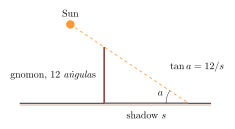
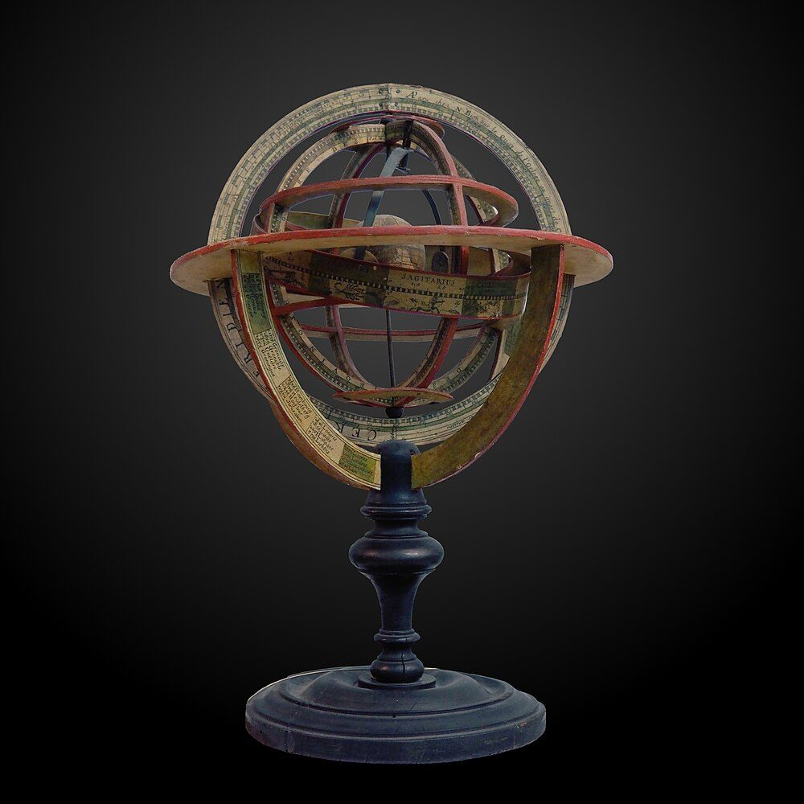
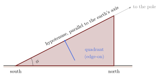
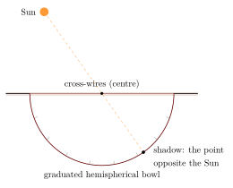
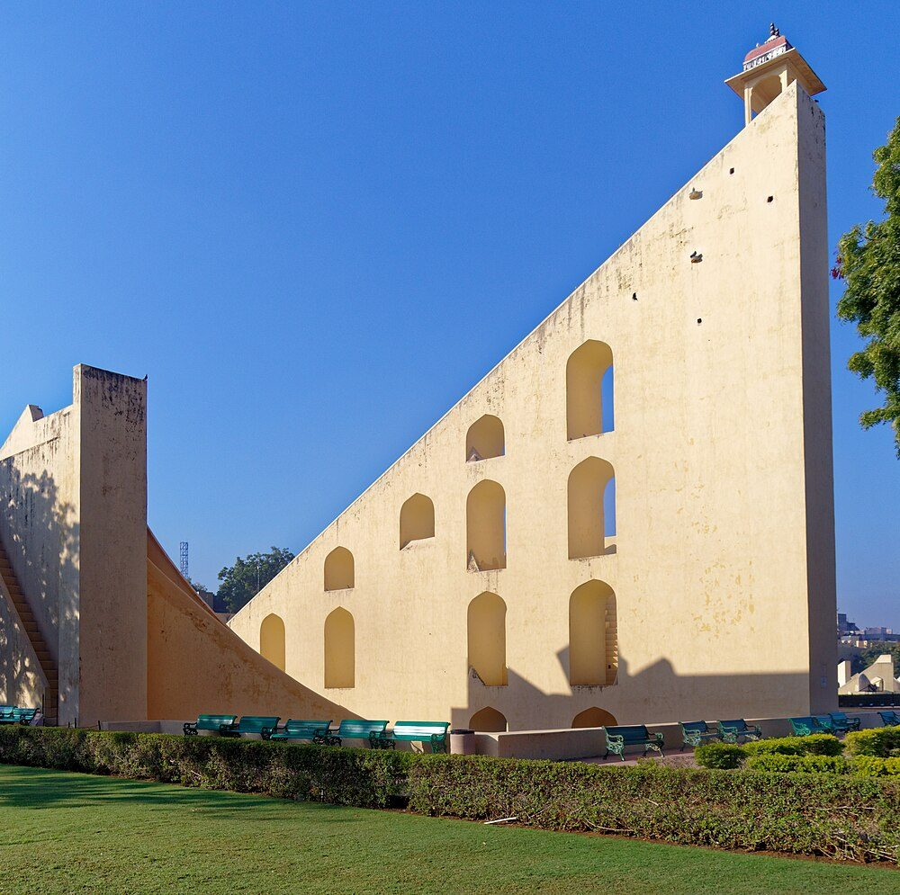
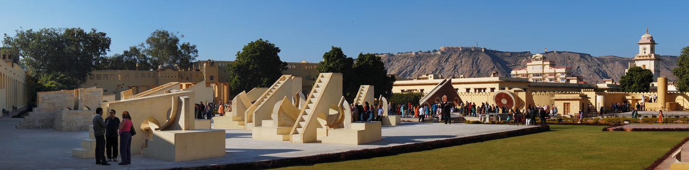
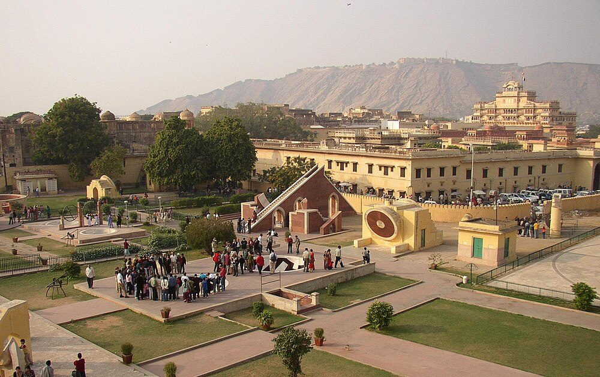

Chapter 11: Instruments, Islamic Astronomy and the Observatories of Jai Singh¶
11.1 Instruments in the Siddhāntas¶
Most siddhāntas contain a chapter on instruments (yantrādhyāya), and the instruments they describe have been surveyed by Ōhashi (1994); the surviving physical instruments, most of them from the last four centuries, by Sarma (2008). The classical instruments were simple, made of wood, metal or clay, and mostly small. They were used for teaching, for timekeeping, and for observations of the Sun’s altitude, the time of day and night, and the positions of stars and planets. The texts rarely report the results of observations made with them, which is one reason why the observational basis of Indian astronomy has been debated (Chapter 1).
11.1.1 The gnomon¶
The oldest and most important instrument was the gnomon (śaṅku), a vertical rod conventionally 12 aṅgulas high, set up on level ground. Its shadow gives the cardinal directions, the time of day, the Sun’s altitude and, from the noon shadow at the equinox, the latitude (Chapter 6). Its use goes back to the Vedic altar manuals and is described in all the siddhāntas.

11.1.2 Water clocks¶
At night, and on cloudy days, time was measured with water clocks. The usual Indian form (ghaṭī or ghaṭikāyantra) was a hemispherical copper bowl with a small hole in the bottom, floated in a vessel of water; it filled and sank in one ghaṭikā (24 minutes), after which it was emptied and set floating again, and an attendant struck a gong. The Sūryasiddhānta and other texts describe it, and such bowls were used at temples and courts until recent times (Ōhashi 1994; Sarma 2008). The size of the hole was found by trial against a sundial or the stars, not by a hydraulic formula.
11.1.3 The armillary sphere and other instruments¶
The golayantra or armillary sphere, a model of the heavens made of rings representing the horizon, meridian, equator, ecliptic and other circles, is described in the Sūryasiddhānta (chapter 13), by Āryabhaṭa (who mentions a sphere turned by water) and by most later authors. It served above all for teaching and for demonstrating the relations among the circles of the sphere.


The chapters on instruments in Brahmagupta’s Brāhmasphuṭasiddhānta, Lalla’s Śiṣyadhīvṛddhidatantra and Bhāskara II’s Golādhyāya describe how each instrument is made and used. Bhāskara lists the sphere (gola), the equatorial ring (nāḍīvalaya), the staff (yaṣṭi), the gnomon (śaṅku), the water clock (ghaṭī), the circle (cakra), the semicircle (cāpa), the quadrant (turya) and his own board (phalaka), and praises above all the “instrument of the intellect” (dhīyantra), meaning the astronomer’s understanding, without which no instrument is of use. Most of these are simple devices for measuring the altitude of the Sun or a star, or the time, and many could be improvised from wood or bamboo. Ōhashi’s survey shows that the classical instruments were quite adequate for the measurements on which the siddhānta parameters could have been based (Ōhashi 1994).
Other texts add the hemispherical bowl (kapāla) and various shadow instruments. Bhāskara’s “board” (phalakayantra) is a graduated rectangular board with a pointer, for finding time from the Sun’s altitude (Bhāskara II 1861; Ōhashi 1994). Several authors, including Brahmagupta, Lalla and Bhāskara II, also describe “self-moving” devices (svayaṃvaha), wheels said to turn perpetually with the help of mercury or water; these belong to the history of speculation about perpetual motion, not of working instruments.
11.2 The Astrolabe in India¶
The planispheric astrolabe, the characteristic instrument of medieval Islamic astronomy, reached India with the Delhi Sultanate. It projects the celestial sphere onto a flat plate, and with it the user can find the time from the altitude of the Sun or a star, the rising and setting of stars, the ascendant, and much else. Its main parts are the body (mater), plates engraved for particular latitudes, the openwork “rete” carrying pointers for bright stars and the ecliptic, and a sighting rule on the back.
The first Sanskrit treatise on the astrolabe, the Yantrarāja (“King of Instruments”), was written in 1370 by the Jain monk Mahendra Sūri, astronomer at the court of Sultan Fīrūz Shāh Tughluq, and was commented on by his pupil Malayendu Sūri. It was followed by other Sanskrit works on the instrument. Astrolabes were made in India in large numbers, especially in Lahore from the late sixteenth century, with Arabic or Persian inscriptions; others were made with Sanskrit inscriptions in Devanāgarī, giving the nakṣatras and Indian units. S. R. Sarma’s studies of these instruments show the astrolabe as a shared Indo-Islamic instrument, adapted to Indian needs (Sarma 2008).
11.3 Islamic Astronomy in India¶
11.3.1 The zīj tradition¶
Islamic astronomy, which had absorbed Indian methods in eighth-century Baghdad (Chapter 16) and then developed on a largely Ptolemaic basis, returned to India with the Delhi Sultanate and the Mughals. Its characteristic product was the zīj, a handbook of astronomical tables with instructions for their use. The Zīj-i Sulṭānī compiled at the observatory of Ulugh Beg in Samarqand (completed around 1440) was widely used in Mughal India, and Mughal astronomers produced their own versions, such as the Zīj-i Shāh Jahānī under Shāh Jahān. Astronomers and astrologers trained in Persian and Arabic served at the courts alongside Sanskrit-trained jyotiṣīs.
11.3.2 The Delhi Sultanate¶
Islamic astronomy in India before the Mughals is much less well known than the Sanskrit tradition beside it or the Mughal astronomy that followed. Persian chroniclers show that the sultans of Delhi, from the thirteenth century, kept astrologers at court and consulted them on the timing of campaigns and ceremonies, and these astrologers presumably computed with Persian and Arabic zījes brought from Iran and Central Asia. Fīrūz Shāh Tughluq (r. 1351–1388) is the best-documented patron: the chroniclers of his reign report that Sanskrit books taken from the temple library of Nagarkot (Kangra) were translated into Persian, among them works on astronomy and astrology, and it was at his court that Mahendra Sūri wrote the first Sanskrit treatise on the astrolabe (Section 11.2). Most Sultanate-period Persian astronomical writing, however, survives only in manuscript or is known only by title, and it has not yet been studied in enough detail to support a fuller account; this chapter therefore follows the Islamic tradition in India mainly where it met the Sanskrit one.
11.3.3 Astronomy and astrology at the Mughal court¶
The Mughal emperors and their nobles took a keen interest in the heavens. Astrologers, both Muslim and Hindu, were consulted on the timing of coronations, campaigns and journeys, and Mughal memoirs and histories mention their predictions, sometimes with scepticism. Humāyūn was devoted to astronomy and astrology and is said to have organised aspects of his court according to the planets; Akbar’s court employed astrologers of both traditions and sponsored translations from Sanskrit into Persian, among them the poet Fayḍī’s Persian version of Bhāskara II’s Līlāvatī (1587), whose preface is the source of the legend of Līlāvatī (Section 9.6); Shāh Jahān’s reign saw the Zīj-i Shāh Jahānī and its Sanskrit version by Nityānanda. Persian-language astronomy and astrology flourished alongside Sanskrit, and many scholars worked in both. This environment, rather than any single translation, is the setting for the Sanskrit response to Islamic astronomy (Plofker 2009; Sarma 2008).
11.3.4 Persian-language astronomy in India¶
Astronomy written in Persian in India deserves to be counted as part of Indian astronomy, not only as a foreign presence. The Zīj-i Shāh Jahānī, compiled by Mullā Farīd al-Dīn Masʿūd Dihlawī, adapted Ulugh Beg’s tables to the Mughal capital and its calendar. Abū al-Faḍl’s Āʾīn-i Akbarī, the great survey of Akbar’s empire written in the 1590s, includes an account of Hindu learning in which the Indian calendar, eras and astronomy are described for Persian readers, as al-Bīrūnī had done five centuries earlier. Movement also ran the other way: Sanskrit manuals explained the Islamic calendar and Persian astronomical terms to Indian astronomers, among them the Pārasīprakāśa of Vedāṅgarāya (1643), written at Shāh Jahān’s court (Pingree 1981). Instrument-making was another meeting point: the Lahore workshops mentioned above, among them a family of makers active over several generations, supplied astrolabes and celestial globes to patrons across the Mughal world (Sarma 2008). The history of these Persian texts and instruments is still less studied than that of the Sanskrit tradition, and much of it remains in manuscript.
11.3.5 Sanskrit responses¶
The encounter produced a substantial Sanskrit literature (Pingree 1978; Plofker 2009).
-
Translations. Nityānanda, at Shāh Jahān’s court, translated the Zīj-i Shāh Jahānī into Sanskrit as the Siddhāntasindhu (1628) and wrote the Sarvasiddhāntarāja (1639), presenting Islamic (Ptolemaic) astronomy in the form of a Sanskrit siddhānta. Later a Sanskrit version was made of al-Birjandī’s commentary on part of Naṣīr al-Dīn al-Ṭūsī’s Tadhkira, a major work of Islamic theoretical astronomy (Kusuba and Pingree 2002).
-
Debate. In Vārāṇasī in the mid-seventeenth century, Kamalākara’s Siddhāntatattvaviveka (1658) adopted elements of Islamic and Greek astronomy and criticised his rivals, while Munīśvara, author of the Siddhāntasārvabhauma (1646), defended the traditional siddhānta. Their debates also concerned the place of Purāṇic cosmology (Minkowski 2004).
-
Astrology. Perso-Arabic astrology was translated into Sanskrit as tājika, used especially for annual horoscopes; the Tājikanīlakaṇṭhī (1587) of Nīlakaṇṭha Daivajña (not the Kerala astronomer of the same name) became its standard text (Chapter 15).
Overall, Sanskrit astronomers took over Islamic instruments, tables and some models while keeping their own framework of computation and their sidereal reckoning. Pingree judged that the encounter changed traditional practice less than might have been expected; more recent work has emphasised the range and seriousness of the exchange (Minkowski 2004; Sarma 2008).
11.4 Sawai Jai Singh and His Observatories¶
11.4.1 The project¶
Sawai Jai Singh II (1688–1743), ruler of Amber and founder of Jaipur and a high noble of the Mughal empire, was the most ambitious patron of astronomy in early modern India. Finding that the positions computed from the existing tables, both Sanskrit and Islamic, disagreed with observation, he decided to make new observations and new tables. To do so he built five observatories in the 1720s and 1730s: at Delhi (the first, around 1724), Jaipur (the largest), Ujjain, Vārāṇasī and Mathurā. The Mathurā observatory has disappeared; the others survive, restored to various degrees. The Jaipur observatory was inscribed as a UNESCO World Heritage Site in 2010 (Sharma 1995).
Jai Singh’s circle was learned in three traditions. His astronomer Jagannātha Samrāṭ translated into Sanskrit Ptolemy’s Almagest, from al-Ṭūsī’s Arabic recension, as the Samrāṭsiddhānta (1732), and Euclid’s Elements as the Rekhāgaṇita. Persian-writing astronomers worked on the Zīj-i Muḥammad Shāhī, the tables produced by the project and named after the emperor Muḥammad Shāh. Jai Singh was also in contact with Jesuit astronomers, obtained European astronomical tables, including those of Philippe de La Hire, and sent a mission to Portugal (Sharma 1995).
11.4.2 The instruments¶
Jai Singh’s distinctive idea was to build instruments in masonry on a huge scale, so that their graduations could be finely divided and their alignment would not change. Several of the designs were his own or were developed in his circle from traditional instruments.
| Instrument | Description and use |
|---|---|
| Samrāṭ yantra | equinoctial sundial: a great triangular wall whose upper edge points to the celestial pole, with graduated quadrants on either side in the plane of the equator; time and the Sun’s declination |
| Jaya Prakāśa | a pair of complementary hemispherical bowls sunk in the ground, their inner surfaces engraved with coordinate circles; the shadow of a cross-wire stretched over the rim shows the Sun’s position directly |
| Rāma yantra | a pair of complementary open cylindrical structures with a central pillar; altitude and azimuth |
| Rāśivalaya yantras | twelve dials, one for each zodiacal sign, each oriented so as to measure ecliptic coordinates when the beginning of its sign is on the meridian |
| Nāḍīvalaya | two dials in the plane of the equator, facing north and south |
| Digaṃśa yantra | circular walls around a central pillar; azimuth |
| Ṣaṣṭhāṃśa | sixty-degree arcs in the meridian inside a darkened chamber, with a pinhole image of the Sun; noon altitude and the Sun’s diameter |
| Kapāla yantra | hemispherical dials for conversion between coordinate systems |
| Cakra yantra | large rings mounted parallel to the earth’s axis; declination and hour angle |
11.4.3 How two of the instruments work¶
The Samrāṭ yantra.
The gnomon is a right-angled triangle of masonry standing in the plane of the meridian, its base running north–south and its upper edge (the hypotenuse) rising towards the north at an angle to the horizontal equal to the latitude of the place, so that it is parallel to the earth’s axis. On each side of the gnomon a quadrant of a circle is built, lying in the plane of the celestial equator, with its centre on the hypotenuse. As the sky turns, the shadow of the hypotenuse moves across the quadrants at a uniform rate of \(15^\circ\) an hour, so that equal divisions of the quadrants mark equal intervals of time; the eastern quadrant serves in the morning and the western in the afternoon. The Sun’s declination can be read from the position of the shadow along scales marked on the face of the hypotenuse (Figure 11.3).

The Jaya Prakāśa.
Each of the two bowls is a hemisphere sunk into the ground, with its rim level with the ground, representing the visible half of the sky turned inside out. A pair of cross-wires is stretched over the rim so that their intersection lies at the centre of the sphere. The shadow of the intersection falls on the inner surface at the point diametrically opposite the Sun, and lines engraved on the surface (hour circles, declination circles, the horizon system and the signs of the ecliptic) allow the Sun’s coordinates to be read directly. The surface is cut into alternate strips, removed in one bowl and kept in the other, so that the observer can walk within the bowl to read the scales; together the two bowls make one complete hemisphere (Sharma 1995).



The Samrāṭ yantra at Jaipur is among the largest sundials ever built; its gnomon wall rises about 27 metres. Its scale allows very fine graduation, and it is often said that time can be read on it to a few seconds. In practice the edge of the shadow is blurred by the Sun’s finite disc, and the accuracy achievable with the masonry instruments, discussed by Sharma (1995), was limited also by the precision of construction and by settling of the masonry.




11.4.4 Jai Singh and his predecessors¶
Jai Singh’s project belongs to a tradition of royal observatories in the Islamic world. The observatory of Marāgha in north-western Iran, founded in 1259 under Naṣīr al-Dīn al-Ṭūsī, and that of Ulugh Beg at Samarqand, built in the 1420s, used large fixed instruments, including a huge meridian arc at Samarqand, to obtain new parameters for new zījes. Jai Singh knew Ulugh Beg’s tables and sought to improve them. His instruments, however, differ from those of his predecessors: most are not meridian instruments but dials and bowls that give coordinates directly at any hour, combining the principles of the sundial, the armillary sphere and the astrolabe in masonry. Several, such as the Jaya Prakāśa and the Rāma yantra, have no exact precedent.
11.4.5 Assessment¶
Jai Singh’s observatories are monuments of the last great project of naked-eye astronomy, carried out when the telescope had already transformed European astronomy. The Zīj-i Muḥammad Shāhī, completed in the 1730s, was based in large part on the tables of Ulugh Beg, corrected by the new observations (Sharma 1995). It improved on the older tables available in India, but it did not match the best European tables of its time, and Jai Singh’s programme did not continue after his death in 1743. Nevertheless, the project is remarkable for its scale, for its deliberate combination of Indian, Islamic and European learning, and for the instruments themselves, several of which are original designs. Those achievements, rather than its tables, are its legacy.
Further Reading¶
Ōhashi (1994) surveys the instruments of the siddhāntas; Sarma (2008) the history of instruments, including astrolabes; Sharma (1995) Jai Singh and his observatories; Minkowski (2004) and Kusuba and Pingree (2002) the Sanskrit response to Islamic astronomy.